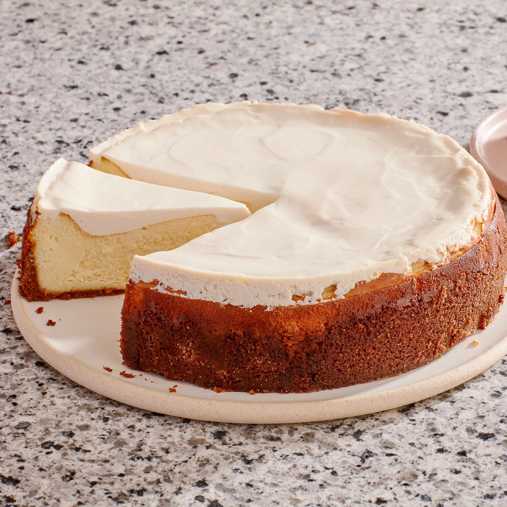

Kitty Cats' Cheesecake
Image of completed cheesecake
This is a quick, easy, and delicious recipe for homemade cheesecake. Cheesecake is often
seen as a daunting recipe, but it is actually quite simple. The trick to creating a perfect
cheesecake with no cracks is to perfect the baking process. I find the best way to do it is
with a water bath. This prevents the cheesecake from cracking in the oven, leaving a beautiful
cake once completed.
Ingredients
- 1 Crumb crust recipe
- 3 (8oz) packages of cream cheese, softened
- 4 large eggs
- 1 teaspoon vanilla
- 1 cup sugar
Steps
- Make crumb crust and preheat oven to 350°F
- Beat cream cheese with an electric mixer untill fluffy and add egs, 1 at a time, then vanilla and sugar, beating on low speed until each ingredient is incorporated and scraping down bowl between additions.
- Put springform pan with crust in a shallow baking pan. Pour filling into crust and bake in baking pan (to catch drips) in middle of oven 45 minutes, or until cake is set 3 inches from edge but center is still slightly wobbly when pan is gently shaken. Let stand in baking pan on a rack 5 minutes. Leave oven on.
- Run a knife around top edge of cake to loosen and cool completely in springform pan on rack. (Cake will continue to set as it cools.) Chill cake, loosely covered, at least 6 hours. Remove side from pan and transfer cake to a plate. Bring to room temperature before serving.
Return home